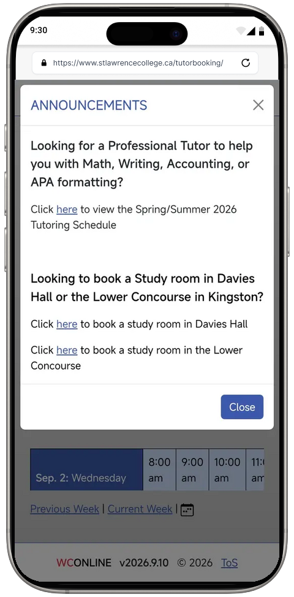
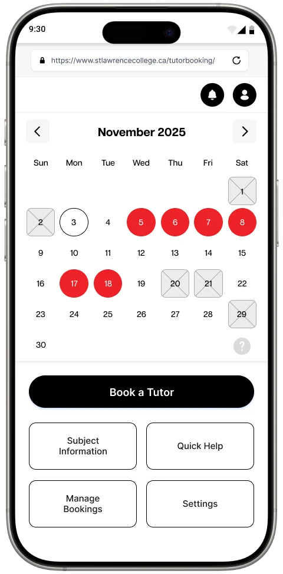
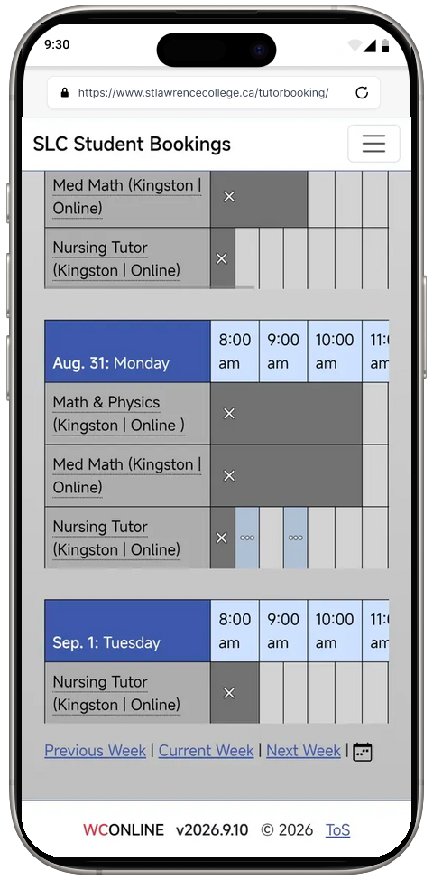
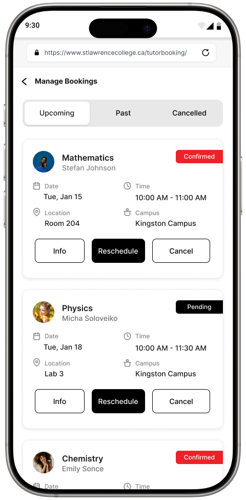
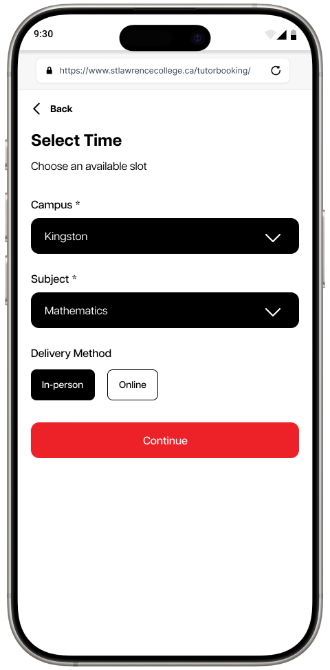
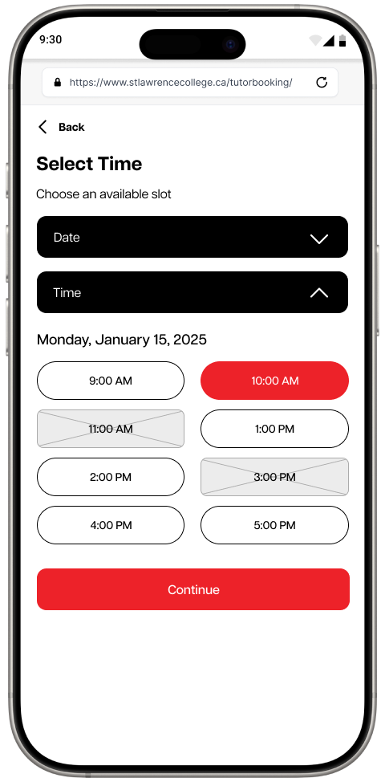
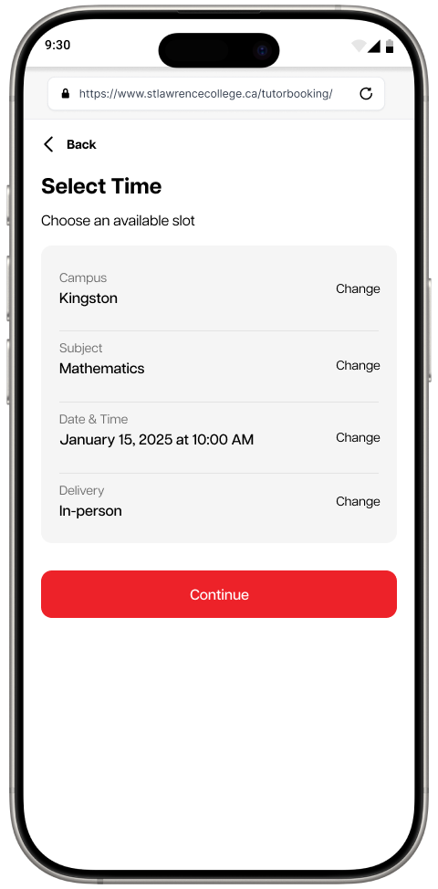
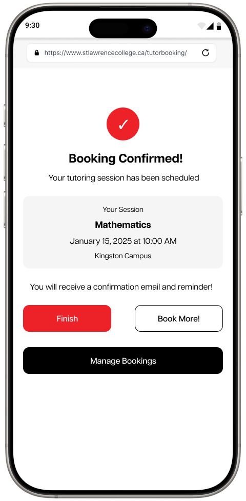
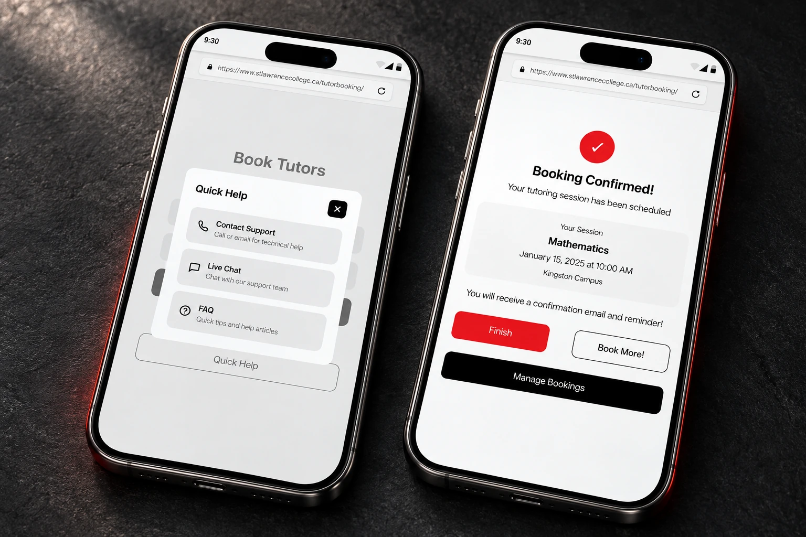

01 / The challenge
The help existed.
The path was hard to see.
Earlier DESI 251 research identified a cluttered mobile experience, hard-to-find actions, and calendar states that depended heavily on colour.
Students needed to choose a campus, subject, and session type on a small screen. The redesign had to make those choices clearer while keeping help close.




02 / The central decision
One decision
at a time.
Explore the booking journey or switch to access and support. Each walkthrough connects real button states, opened panels, selections, and outcomes.
Guided product story
One home for the whole task.
The calendar becomes the stable starting point. “Book a Tutor” carries the visual priority, while Quick Help and Manage Bookings remain available without competing with the main task.
The hierarchy makes the next action obvious without hiding secondary needs.
Key states
Critical moments, shown in full.
The interactive sequence demonstrates continuity; these four screens preserve the most important decisions for closer visual review.
-
01
Set the context

Campus and subject establish what the student needs.
-
02
Choose a time

A selected session is distinct from the other options.
-
03
Review the details

A dedicated review gives students a moment to check.
-
04
Know it’s booked

Confirmation closes the loop and offers a next step.
Select any screen to inspect it at full size.
System coverage
The experience around
the booking.
The primary flow is supported by the moments that happen before a student books and whenever the interface alone is not enough.
Help begins before the first selection.
Sign-in, account support, and the calendar remain connected, so an access problem does not become a dead end.
Not every booking follows a straight line.
A visible availability key, an expanded date state, and Live Chat clarify the system when a student needs more context or direct assistance.
Visual system
One system.
One signal.
Black creates structure, white gives dense information room to breathe, and red is reserved for action, selection, and confirmation. The restrained palette connects the experience to SLC while making every screen feel like part of the same product—not a collection of unrelated pages.
- Black
- Structure
- White
- Clarity
- Red
- Action

03 / Beyond the main task
Help is part
of the flow.
A question shouldn’t be a dead end.
Quick Help and Contact Support provide a route to assistance without finishing a booking.
The experience continues after “Confirm”.
Manage Bookings gives existing appointments their own place, with change and cancellation controls.
Completed deliverables
A mobile Figma prototype covering session selection, booking review, confirmation, and appointment management, supported by a moderated think-aloud testing plan.
Design contribution
Focused choices, visible support routes, and a dedicated confirmation screen bring the student’s immediate task to the centre of the experience.
Original project presentation ↗